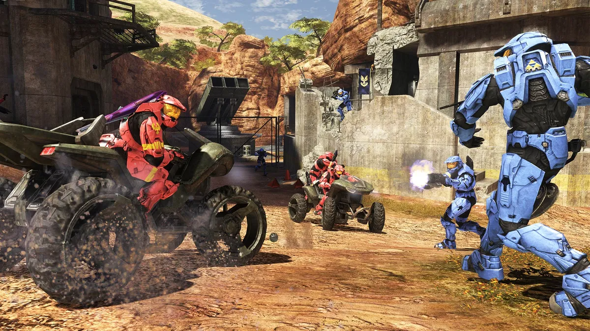
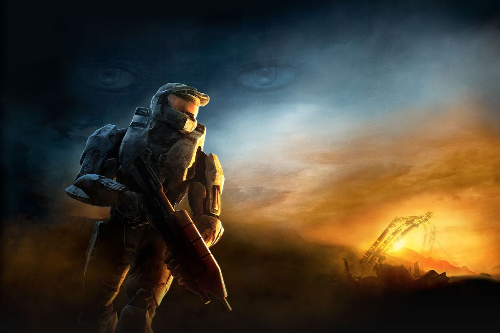

Halo 3 is a 2007 first-person shooter video game developed by Bungie for the Xbox 360 console. The third installment in the Halo franchise following Halo: Combat Evolved (2001) and Halo 2 (2004), the game's story centers on the interstellar war between 26th-century humanity, a collection of alien races known as the Covenant, and the alien parasite Flood. The player assumes the role of the Master Chief, a cybernetically enhanced supersoldier, as he battles the Covenant and the Flood. In cooperative play, other human players assume the role of allied alien soldiers. The game features vehicles, weapons, and gameplay elements familiar and new to the series, as well as the addition of saved gameplay films, file sharing, and the Forge map editor—a utility which allows the player to perform modifications to multiplayer levels.
Halo 2 had originally been intended to wrap up the story begun with Combat Evolved, but development difficulties led to a cliffhanger ending. Bungie began developing Halo 3 shortly after Halo 2 shipped. The game was officially announced at E3 2006, and its release was preceded by a multiplayer beta open to select players who purchased the Xbox 360 game Crackdown. Microsoft spent $40 million on marketing the game, in an effort to sell more game consoles and broaden the appeal of the game beyond the established Halo fanbase. Marketing included cross-promotions and an alternate reality game.
Halo 3 was released on September 25 and grossed US$170 million on its first day of release, rising to $300 million in its first week. The game sold in excess of 14.5 million copies and was the best-selling video game of 2007 in the United States. More than one million people played Halo 3 on Xbox Live in the first twenty hours. Overall, the game was well received by critics, with the Forge and multiplayer offerings singled out as strong features; however, some reviewers criticized single-player aspects, especially the plot and campaign layout. Halo 3 is frequently listed as one of the greatest video games of all time. A sequel, Halo 4, released in November 2012, was developed by 343 Industries. Halo 3 was re-released as part of Halo: The Master Chief Collection for the Xbox One in November 2014 and for Microsoft Windows in July 2020.
Gameplay

Halo 3 is a shooter game where players primarily experience gameplay from a first-person perspective. Much of the gameplay takes place on foot, but also includes segments focused on vehicular combat. Gameplay focuses on the "Golden Triangle of Halo": players utilize weapons, grenades, and melee attacks, which are available to a player in most situations. Players may dual-wield some weapons for additional firepower, forgoing the use of grenades and melee attacks. Unlike previous installments, the player's secondary weapon is visible on their player model, holstered or slung across the player's back. Halo 3 introduces support weapons, cumbersome two-handed weapons that slow the player when carried, but offer greatly increased firepower in return.
In addition to weapons, Halo 3 contains a new class of gear called equipment; these items have various effects, ranging from defensive screens to shield regeneration and flares. Only one piece of equipment can be carried at a time. The game's vehicular component has been expanded with new drivable and AI-only vehicles.
Halo 3 contains non-gameplay additions, such as Forge, a map-editing tool. Forge enables players to insert and remove game objects, such as weapons, crates and vehicles into existing multiplayer maps. Almost all weapons, vehicles, and interactive objects can be placed and moved on maps with Forge. Players can enter Forge games and edit and manipulate objects in real time. A budget limits the number of objects that can be placed. Players may also save up to 100 films of gameplay to their Xbox 360's hard drive, viewing the action from any angle and at different speeds. Halo 3 offers a form of file sharing, where items such as saved films, screenshots, and custom variants can all be uploaded to Bungie's official website. Anyone can browse user created content that has been uploaded to Bungie's website and tag it to automatically download to their console next time they sign into Xbox Live on Halo 3.
Multiplayer and Modes

Halo 3's story or campaign mode can be played alone or cooperatively with up to three other players via Xbox Live or System Link. Instead of each player being an identical character in cooperative play, as in previous Halo games, the first player plays as Master Chief, the second player as the Arbiter, and the final two players controlling the Covenant Elites N'tho 'Sraom and Usze 'Taham. Each player has identical abilities, although their starting weapons vary. Hidden skulls found on each level cause changes to the gameplay when enabled, such as giving the enemies extra health, changing in-game dialogue, or modifying AI behavior. These skulls, as well as the difficulty level and the speed at which the level is completed, provide multipliers to the total score. Players are awarded gamerscore points for unlocking Achievements by reaching a certain score in each level.
Local area network or Xbox Live supports up to sixteen players in multiplayer matches, with game modes including variations of deathmatch and Capture the Flag. Players must actively seek out other players through their Xbox Live Friends list, using the party invite system, or the LAN search feature to play multiplayer matches with their own custom rules and customized maps. If they are connected to Xbox Live however, a player can choose to have the game decide for them the exact rules and map to play on, as well as finding additional people to play against or with, using the "Matchmaking" system (the automated grouping of players of similar skill). A player will decide from a selection of developer designed "playlists" which each contain a certain way to experience the game.
Like other multiplayer Xbox 360 titles, Halo 3 uses a customized version of TrueSkill ranking system for its matchmaking on a per-playlist basis. A linear measure of a player's experience with the matchmade portion of the game and each particular playlist is also tracked (denoted as EXP). To help players have an enjoyable time online, several peace-of-mind features are implemented within easy reach, such as avoid/feedback options on a player's service record, as well as voice chat mute straight from the in-game scoreboard. Like Halo 2, Halo 3 supports downloadable content and updates. The online services for the original Xbox 360 version of the game went offline in January 2022.
Story

Setting
Halo 3 is set in a science fiction setting during the years 2552 and 2553. Humanity is at war with a genocidal alliance of alien races known as the Covenant. After years of conflict, a Covenant fleet discovers Earth during Halo 2. "Halos" are massive ringworlds, ranging from thousands to tens of thousands of kilometers in diameter, scattered across the galaxy. These rings were constructed thousands of years ago by a race known as the Forerunners as weapons of last resort against the parasitic alien species known as the Flood. When activated, the Halos would destroy all sentient life in the galaxy, depriving the Flood of its food. The Forerunners disappeared after they activated the rings. In Halo: Combat Evolved, whilst fleeing the Covenant, the UNSC ship Pillar of Autumn stumbled upon one of these ringworlds, Installation 04. Against the wishes of the ring's artificial intelligence (AI) caretaker, 343 Guilty Spark, the human supersoldier Master Chief destroyed the ring to stop the threat from Halo and the Flood. The Covenant, unaware of the destructive nature of the rings, attempt to fire another ring, Installation 05, during Halo 2 in order to fulfill their religious prophecy. One race in the Covenant, the Elites, learn the truth about the rings, and join forces with humanity in order to stop the installation's firing. Though they are successful, the unexpected shutdown triggers a fail-safe protocol, priming all the rings for firing from one location, referred to as the Ark. Still oblivious to the true nature of the rings, the Covenant High Prophet of Truth and the remaining loyalist Covenant proceed to head to Earth, where they believe the Ark is buried.
Halo 3's protagonist is Master Chief Petty Officer John-117, an enhanced supersoldier known as a "Spartan". Master Chief fights alongside the Arbiter, a disgraced Covenant Elite commander. Two other Elite characters, N'tho 'Sraom and Usze 'Taham, appear as the third and fourth players in cooperative play. Supporting characters from previous games return, including human soldiers Avery Johnson and Miranda Keyes. Also playing a role in the story is the Flood leader known as the "Gravemind". In Halo 2, the Gravemind escapes from confinement, invades the Covenant mobile capital city of High Charity, and captures the human AI Cortana.
Plot
After the events of the comic tie-in Halo: Uprising, the Master Chief arrives on Earth in east Africa, where he is found by Johnson and the Arbiter. The Chief and company return to a UNSC outpost where Keyes and Lord Hood plan a final effort to stop the Covenant leader, the High Prophet of Truth, from activating a Forerunner artifact the Covenant have excavated. The Chief clears anti-air Covenant defenses so Hood can lead the last of Earth's ships against the Prophet, but Truth activates the buried artifact, creating a slipspace portal which he and his followers enter. A Flood-infested ship crash-lands nearby; Elite forces arrive and vitrify the Flood-infected areas of Earth, stopping the threat. Following a message Cortana left aboard the Flood ship, the Chief, Arbiter, Elites, Johnson, Keyes and their troops follow Truth through the portal. Joining them is 343 Guilty Spark, who aids the Chief as he has no function to fulfill after the destruction of his ringworld.
Traveling through the portal, the humans and Elites discover an immense artificial structure known as the Ark, far beyond the edges of the Milky Way galaxy. Here, Truth can remotely activate all the Halos. The Flood arrive aboard High Charity in full force, beginning to infest the installation. Truth captures Johnson, as he needs a human to use Forerunner technology. Keyes is killed attempting a rescue, and Johnson is forced to activate the rings. Gravemind forges a truce with the Chief and Arbiter to stop Truth and defeat the remainder of his army, rescuing Johnson and halting the installations' activation. After the Arbiter kills Truth, Gravemind turns on the Chief and Arbiter.
The Chief, Arbiter and Guilty Spark discover that the Ark is constructing another Halo to replace the one that the Chief previously destroyed. The Chief decides to activate this Halo; the ringworld would eliminate the Flood infestation on the Ark while sparing the galaxy at large from destruction. To activate the ring, the Chief rescues Cortana, who has the Activation Index of the destroyed Halo, from High Charity and destroys the city. Arriving on the new Halo, Cortana warns that Gravemind is trying to rebuild itself on the ring. The Chief, Arbiter, and Johnson travel to Halo's control room to activate the ring. Guilty Spark explains that because the ring is not yet complete, a premature activation will destroy it and the Ark. When Johnson ignores his warning, Guilty Spark fatally wounds him to protect "his" ring. Although the Chief destroys Guilty Spark, Johnson soon dies of his injuries. Chief activates the ring, and escapes the ring's self-destruction on the UNSC frigate Forward Unto Dawn. However, the force of Halo's blast causes the slipspace portal to collapse, resulting in only the front half of Forward Unto Dawn, carrying the Arbiter, making it back to Earth And landing in the Indian Ocean.
A memorial service is held on Earth for the fallen heroes of the Human-Covenant war, during which the Arbiter and Lord Hood briefly exchange words regarding the fallen Master Chief. After the memorial service, the Arbiter and his Elite brethren depart for their home planet. Meanwhile, the rear half of the Forward Unto Dawn drifts in unknown space. Cortana drops a distress beacon, but acknowledges it may be many years before they are rescued. As the Master Chief enters cryonic sleep, Cortana confides to him that she will miss him, but he comforts her by telling her "wake me when you need me." If the game is completed at the Legendary difficulty level, the scene continues to show the piece of Forward Unto Dawn drifting towards an unknown planet, setting up the events of Halo 4.